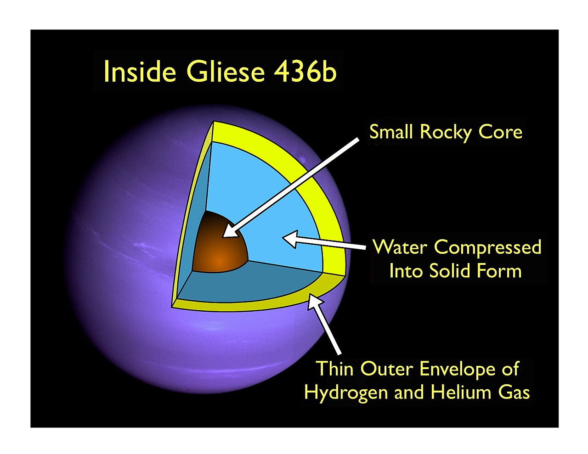

Overview
Exo-ice giants are exoplanets about the same size and makeup as Uranus and Neptune, with a deep layer of water, ammonia, and methane wrapped around a rocky core, topped with a fairly thin layer of hydrogen and helium gas. Fewer of these have been confirmed compared to smaller super-Earths and mini-Neptunes, especially on close orbits.
Formation
Like Uranus and Neptune, exo-ice giants are thought to form from a core that grew big enough to grab a modest layer of gas, but not fast or big enough to become a full gas giant like Jupiter or Saturn before its disk ran out of gas. Many sit on wider orbits than hot Jupiters, though some warm and even hot examples have turned up close to their star too.
The Neptune desert
Astronomers have noticed there aren't many Neptune-sized planets on close, hot orbits compared to other sizes, a pattern nicknamed the "Neptunian desert". The best explanation is that strong radiation this close to a star can strip a Neptune-sized planet's atmosphere away completely, either destroying the planet or shrinking it down into a smaller, rocky super-Earth over time.
Atmosphere
Exo-ice giant atmospheres are expected to be mostly hydrogen and helium with a bit of methane, similar to Uranus and Neptune, though it's hard to confirm the exact mix for any single example without detailed light readings. Warmer exo-ice giants closer to their star might lose their lighter gases faster over time, slowly changing their makeup compared to colder, more distant examples.
Notable examples
GJ 436 b, a warm Neptune-sized planet, was found to have a strange comet-like tail of hydrogen gas leaking away, a sign that its atmosphere is slowly being lost due to radiation from its star. HAT-P-11 b is another well-studied Neptune-sized exoplanet, known for having water vapour detected in its atmosphere despite its fairly small size.
Detection
Exo-ice giants are found the same way as most exoplanets, through transits and radial velocity. Their in-between size, bigger than a rocky planet but smaller than a true gas giant, puts them well within reach of most major exoplanet-hunting missions. Studying their atmosphere closely usually needs a bright, nearby host star, since a smaller planet gives off a fainter signal to work with.